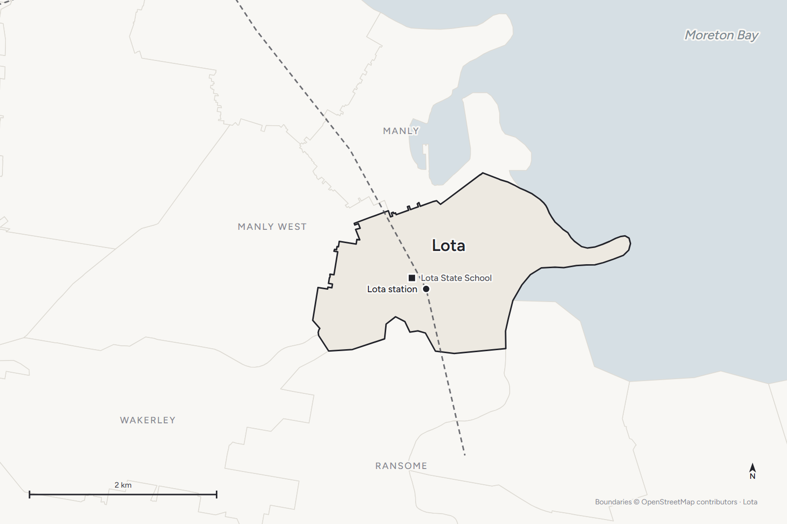
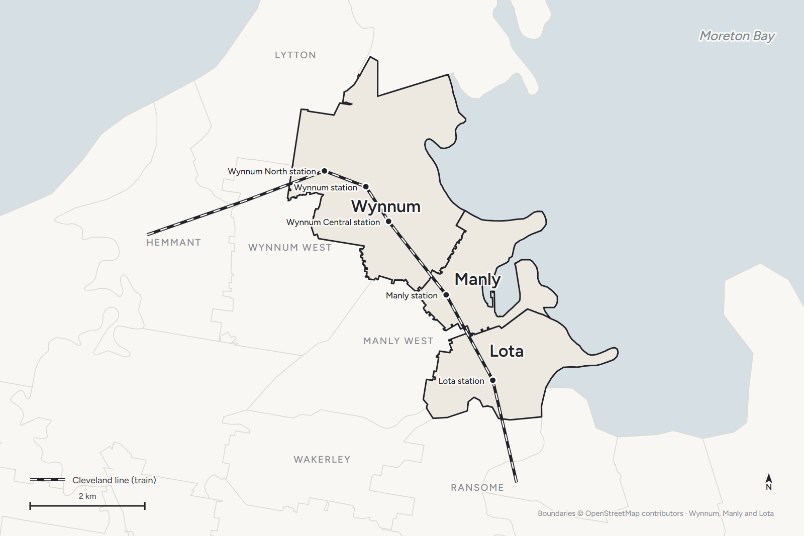
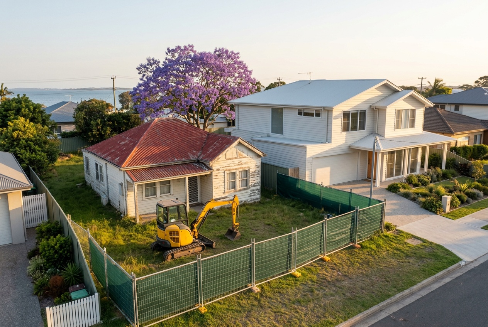

Your questions answered · Living on the Bayside
Lota: the quiet one
between Wynnum and Manly.
Lota is the Bayside suburb people drive through on the way to somewhere else, which is exactly why the people who live there like it. Here's what it is, how it got that way, and what its houses are like once you're inside one.
 Nathan Brain, carpenter and builder at Sabre
17 September 2026
5 min read
Nathan Brain, carpenter and builder at Sabre
17 September 2026
5 min read

What is Lota?
A suburb of houses. The train line runs through it from Manly to the south, over Lota Creek and into Ransome. Lota State School is on Richard Street. The esplanade runs along the bay with a seawall in front of it. Wynnum is two stations north; the Redlands start over the creek.
Lota, 2021 Census: 3,518 people, median age 42, 48.8% couple families with children, 95.3% separate houses, 0.7% flats or apartments.
Australian Bureau of Statistics, 2021 Census QuickStats, Lota. Compare Wynnum and Manly at about 70% houses and 16% flats. Lota hasn't gone to units, and that decides how it feels.
How did it get that way?
The Quandamooka people knew Lota and Manly together as Narlung. In 1860 the land was acquired by William Duckett White, an Irish-born pastoralist and politician, in partnership for some of it with Queensland's first premier, Robert Herbert. The suburb takes its name from Lota House, which Duckett White built in 1863 at the heart of an estate growing sugar cane and fodder on the creek flats.
The Cleveland railway opened through Lota in 1889. In 1960 the line beyond Lota closed, and for more than twenty years Lota was the end of the line, until it reopened in stages between 1983 and 1987. The seawall along the esplanade was built in 1931 as Depression relief work.
Lota State School opened in 1952, which is the year that matters for the houses. The streets filled in the decade either side of it.
What's it like to live in?
- Quiet. No main street, no harbour, no wading pool of its own. Those are in Manly and Wynnum, a few minutes away.
- Flat. Old grid streets on flat ground, the kind you can ride a bike down.
- Family. Nearly half the families have children at home, the highest on this stretch of coast.
- Connected. One station, a forty-something-minute all-stops train to Central, and the Redlands over the creek. The timetable sample is here.
- Honest about the bay. The tide goes out to mudflats, the esplanade carries storm tide levels near the water, and the salt works on everything. Same as the rest of the Bayside.
What are the houses like?
Post-war, mostly, and not much has replaced them yet.
After 1946, when a Brisbane architect estimated a national shortfall of 300,000 houses, Brisbane's suburbs “became populated with low-set timber houses on quarter acre blocks.”
State Library of Queensland, Housing a growing state, 2014. Lota's school opened in 1952 and the streets around it are that era: small, light, fibro somewhere, on blocks the family has usually outgrown.
Walk Lota's streets and you'll find the post-war cottage, the 1960s highset with the rooms built in underneath, and a scattering of 1970s brick. Very little of the newer stock that changed the esplanade end of Wynnum. What each type is made of is here.
For a builder, that's a specific opportunity. Lota's blocks are flat and regular, on an old grid, near a station, in a suburb of houses with a school in it. The house on the block is often seventy years old, small, and clad in something from before 1990. The land carries the value. When a family has outgrown the cottage, the honest options on a block like that are a raise, an extension, or a new house designed for it — and the last one is why the demolition signs are starting to appear in Lota too. Why it's happening across the Bayside is here.
Common questions
Does Lota have shops?
Not a main street. Manly's village and Wynnum's centre are a few minutes away, and most families treat them as their own.
Is there a high school in Lota?
No. The nearest state secondary is Wynnum State High School. The catchments are here.
Does Lota flood?
The esplanade end carries storm tide mapping, and Lota Creek runs along the southern boundary. Council maps every lot; read the FloodWise report for your address. How to read it is here.
Is Lota in the character overlay?
Some streets may be; it's mapped street by street. Most of Lota's houses are post-war and outside the pre-1947 rules, but check your own address before you plan anything.
Sources: Australian Bureau of Statistics, 2021 Census QuickStats, Lota; Lota history (Lota House 1863, railway 1889 and 1960–87, seawall 1931, school 1952, Narlung) as recorded on Wikipedia from Queensland Government and Brisbane City Council sources; State Library of Queensland, Housing a growing state, 2014. Read 17 September 2026. Not planning or financial advice.
Keep reading

Wynnum vs Manly vs Lota: which Bayside suburb suits which family?
Three suburbs, one bay, three different feels. The census numbers side by side, the train, the harbour, the schools, and what the houses are like in each.

What are the houses on the Bayside actually made of?
Pre-war timber, post-war fibro, the 1960s highset, 1970s brick. What each one is like to live in, to change, and to knock down — from a builder who's opened up all of them.

Why are so many Bayside houses being knocked down?
Four things arriving at once: the post-war houses are seventy years old, the fibro era is ending, the blocks are the best in Brisbane, and families want the street more than the house.
Where most families start
A walk through your house with Nathan.
Lota's blocks are the kind we like best: flat, regular, and worth keeping. He'll walk yours with you.
Book your walk-through with Nathan Call 0422 831 306
Already thinking about a rebuild? The free block check is on the same page.